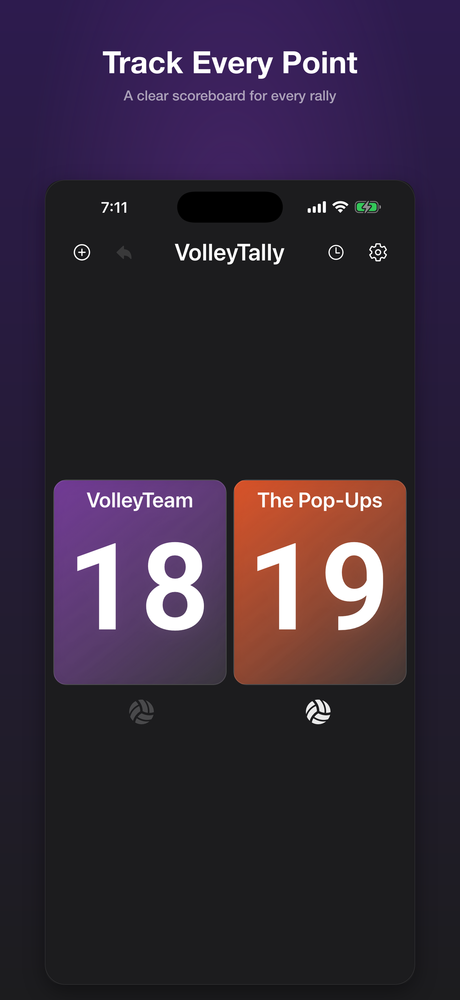
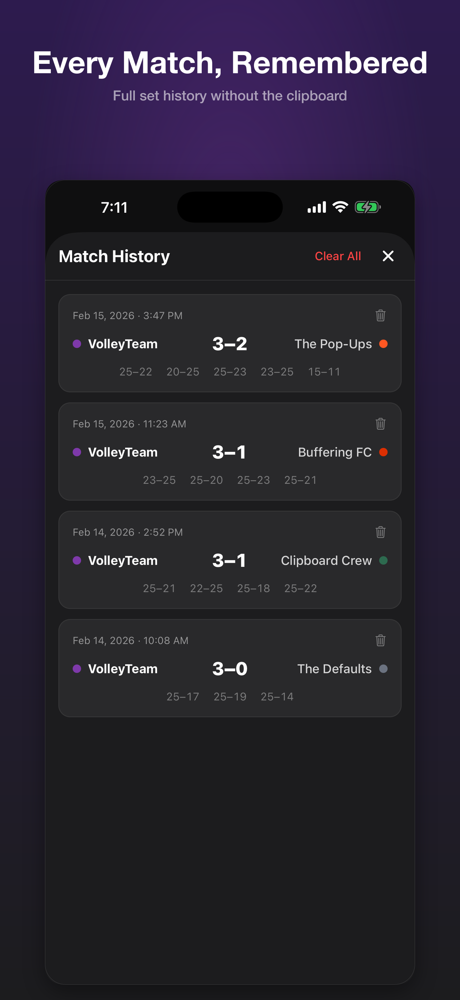
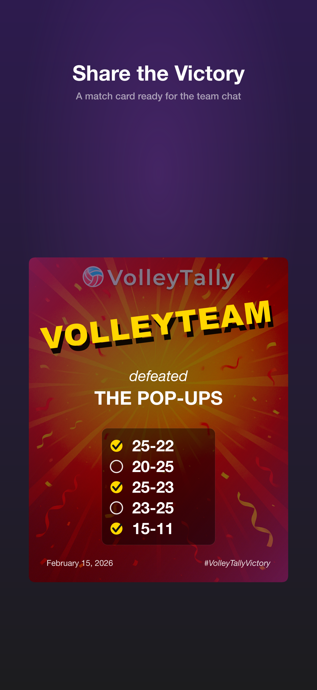
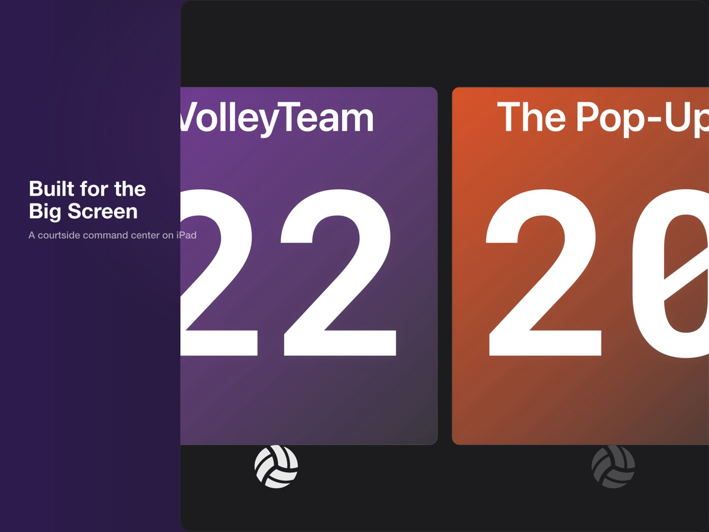
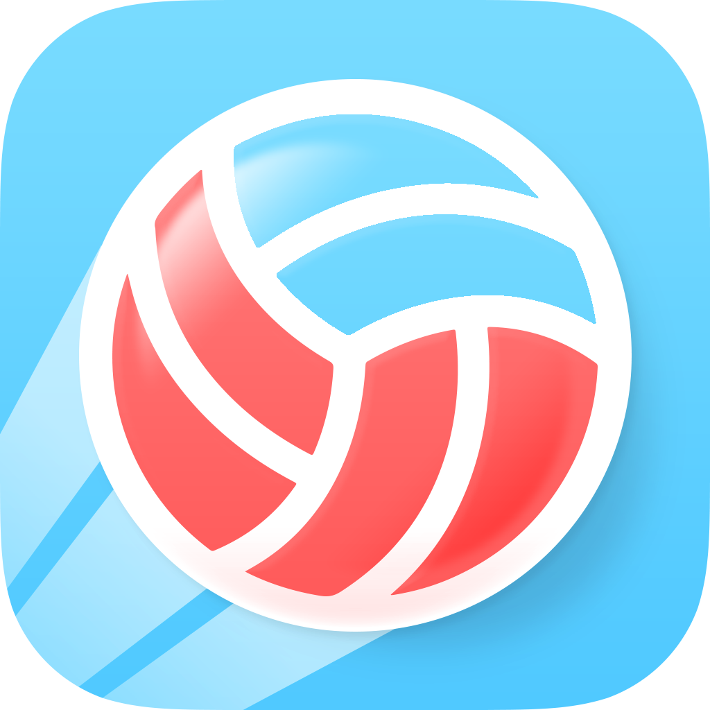

Keep rallies moving
Tap to add points, follow the serving side, and undo a stray tap when the gym gets loud.
Correct a scoreVolleyball scorekeeping for every rally
VolleyTally is a simple volleyball scoreboard for iPhone, iPad, and Android. Track points and sets, fix a stray tap, and share the final score without an account or a complicated setup.
Made for the moment
VolleyTally keeps the match moving without turning scorekeeping into another job.
Tap to add points, follow the serving side, and undo a stray tap when the gym gets loud.
Correct a score
Start with best-of-3, best-of-5, or a 2-set format. Adjust targets, win-by rules, and score caps when your match calls for it.
Explore match rulesSaved matches make it easy to look back. When the match is over, share a polished final score or add it to a team photo.
Save and share a match

Use VolleyTally on iPad when your score needs to be easy to see from across the court.
Simple by design
Name each side, choose colors, and pick the team you’re rooting for—or just start with the defaults.
Tap to add points. VolleyTally keeps the score, sets, and serving side visible at a glance.
Save the result, celebrate the win, and send the final score to the people who were cheering.

Built for courtside
Use VolleyTally on iPad when the score needs to stay clear for everyone watching.
Help that starts where you are
Clear answers for the moments that come up during a match.
No. VolleyTally does not require an account. Your match data is saved on your device.
Yes. VolleyTally supports iPad and a larger courtside display.
Yes. Remove Ads is available as an optional one-time in-app purchase.
VolleyTally is made for straightforward courtside scorekeeping. Explore VolleyTrack for deeper volleyball tracking and statistics.

A related HarpElle product
VolleyTally is built for straightforward courtside scorekeeping. If you’re exploring more in-depth volleyball tracking and statistics for your team, visit VolleyTrack.
Explore VolleyTrackReady when the match starts
Free on iOS and Android, with an optional one-time Remove Ads purchase.